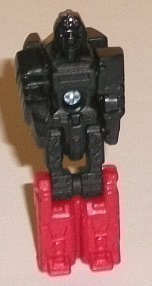
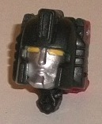
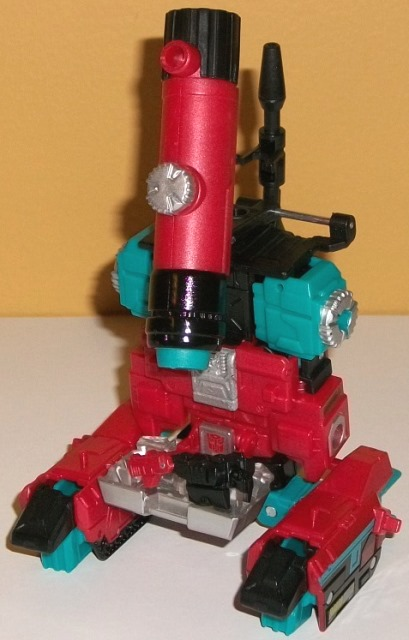
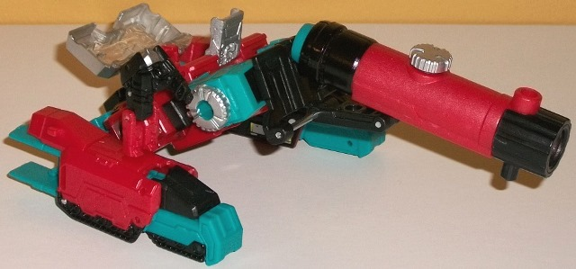
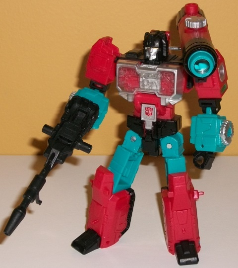

Allegiances
: Autobot
Size
: Deluxe
Difficulty of Transformation to Tank
Mode
: Easy
Difficulty of Transformation to Robot
Mode
: Medium
Color Scheme
: Red, black, teal,
and some silver, clear plastic, dark green, and dull yellow
Rating
: 7.3


Convex is Perceptor's
Titan Master, and his robot mode is based on Perceptor's more robotic look
on his
original G1 toy
, what with a faceplate
on the headsculpt and all. The rest of Convex's robot mode has details
clearly taken from Perceptor, albeit simplified for the size of course,
and "squashed and stretched" a bit to fit the standard Titan Master proportions.
He's got that indented long recetangular chest, little pentagon and stripe
details on the legs that pretty much exactly match Perceptor's, along with
some lines along the waist that match that G1 toy's as well. Sadly, like
most Titan Masters after Wave 1, he has no paint in this mode-- he's all
black, except for the lower legs, which are red. Black is an ESPECIALLY
bad color to have unpainted, as it makes all those little details really
hard to make out. Plus having just the legs red and nothing else looks
a bit odd. As with all Titan Masters, Convex can move back-and-forth at
the hips and knees (as one, each leg is bolted together), as well as limited
ball movement at the neck and shoulders. In head mode, Convex makes for
a pretty solid Perceptor noggin; despite Perceptor having a traditionally
round head, the Titan Master arms and legs only stick out a teeny bit from
the overall silhouette of the head from a frontal view, and here having
the red just on the back end is a positive, as it makes the arms "mesh"
with the face portion better. Perceptor's facesculpt is quite spot-on,
with a roundish helmet complete with a small crest in the middle of the
forehead. He also has a "normal" silver-painted face with yellow eyes and
a neutral expression, which rather suits the egghead.



Perceptor's gone back
to his G1 alt mode for this version, being a microscope. This sticks VERY
close to being a straight-on G1 update with modernized proportions and
better detailing and articulation. I mean even the transformation is (mostly)
ripped wholesale; the robot arms are part of the body but rotated upside
down, and the legs are obviously just kind of hanging out there at the
sides. To me that's the biggest issue with the mode; the obnoxiously obvious
legs at the sides. The arms work decently on the sides of the body of the
microscope, but there's obvious gaps in between the arms and the interior
black sliding piece that comes up the center of the body to form the top
black portion which has the scope on it. The arms should have been a bit
thicker or this sliding piece should have been-- as is, the body just doesn't
look solid enough. The scope itself is very well-done-- you actually can
look through it, though of course it doesn't really magnify anything. Turning
the silver knob causes the scope to extend or retract, which is pretty
cool. There's also several pegs and holes on the scope and on the top of
the microscope body behind it so you can have it at several different levels/angles,
and can rotate it up and around in basically any direction. The base for
you to look at things through the microscope is made out of Perceptor's
chest flipped out-- again, just like on the G1 toy. It's kinda weak and
should be a bit bigger. Plus, there's no real place for Convex to "pilot"
the microsope; the instructions just have you kinda lay him in that clear
base piece. There is one peg for a Titan Master to stand on on the top
of each of the legs in this mode, but that's it as far as interaction with
the guys that form the core of this whole subline. The mold detailing is
pretty decent, with several little lines and vent-like details in most
places, though it's not extraordinary-- it's a definite step up from a
G1 toy, but it's not particularly intricate either. There are a FEW intricate
bits, though, like the "targeting" detail on the clear chest base, some
small circuitry details on the silver piece near the center of the body,
and the faux silver knobs on the sides of the body. The color scheme is
pretty straightforward, being mostly red, teal, and black, with red being
the most common out of the three colors. Given how many TFs simply have
red and black as their main color, adding in some teal looks pretty decent
and contrasts quite well against the other colors, even if it's not realistic.
There's also some silver on the knobs, in the center of the body, and around
the sides of the clear plastic chest piece. For some accent colors, there's
a titch of dark green on some line details on the sides of the main body,
and some teal, black, yellow, and silver painted details on the sides of
the legs which pretty obviously mimic some of the G1 stickers with several
geometric shape details. Thankfully, they're actually paint apps and not
foil stickers, so big props to Hasbro for avoiding those cheap-looking
things on this toy.
Although it's not mentioned
in the instructions, Perceptor does have a tank mode like his G1 toy, and
it was highlighted in the initial promo pics for the toy. It's not simply
a "fan mode" as there are flip-out tread pieces that aren't used in either
of his other modes, as well as a flip-out silver piece in the center. This
mode was always weak in G1, and it's pretty weak here as well-- it's the
microscope mode at an angle with treads, essentially. The treads ARE a
nice detail, though, and the scope makes an okay turret, but it's oddly
angled next to the main body. Even on the main body of the tank mode, it's
difficult to get a Titan Master to easily sit in there. As with the G1
toy, I mostly just ignore this mode.
Perceptor's robot mode
is definitely where the focus of the toy was-- as mentioned earlier, the
transformation is mostly the same as the G1 toy, but the proportions are
definitely better. One word about the transformation, though; one of the
few differences is that there's a long metal rod that the piece that holds
the scope has to slide down so that the scope isn't right in the middle
of this mode, and it's a TIGHT fit. The plastic surrounding this metal
rod is a bit thin; I do worry about it breaking one of these times; though
I have transformed and played with this toy several times and it hasn't
happened yet, I'm still a bit wary. Regardless, the end result, with no
proportional or kibble problems at all (that is, if you don't consider
the scope an extra-- considering how much it looks like a shoulder cannon,
I like it). You can rotate it up and back onto his upper back ifyou don't
like it blocking his "view", anyways. The rest of him looks like a fairly
generic, nondescript well-proportioned robot, as there aren't any really
unique details or bits of the alt mode on it. On the plus side, this makes
for great articulation-- he can move at the neck, shoulders, elbows (at
two points), inwards at the wrists (given that the lower arms are unfortunately
hollow), and movement at the hips (at three points), knees, and slightly
up-and-down at the toes. I wish he had waist articulation, but otherwise
given how well-balanced he is, he can into a ton of neat poses. I will
say I wish the clear plastic on his chest was a bit foggy or shaded, though--
given that it's straight clear plastic you can see the bits behind it on
the robot chest, which de-emphasizes the mold details you're supposed to
see on the front of the chest as a result. Perceptor comes with a sniper
rifle (complete with two little stands on the underside if you want to
pose Perceptor in a sniper-style prone position-- though the neck can't
rotate up enough to pull off that pose, admittedly), which is a callback
to his temporary "job" in the IDW comics. The sniper rifle can fit a Titan
Master in the wider portion of it near the back, though the rifle doesn't
easily store in either of his other modes-- it sticks out like a sore...
uh... gun.
Titans Return Perceptor
has a great robot mode with awesome proportions and articulation, but although
he's a great action figure, he's not a great Transformer. He's too slavish
to his G1 toy when we have much better engineering now-- his microscope
mode should have been modernized and made more solid with the legs less
obvious, and his tank mode is very weak as well. One of the weakest of
the Titans Returns deluxes, taken as a whole package.
Review by Beastbot